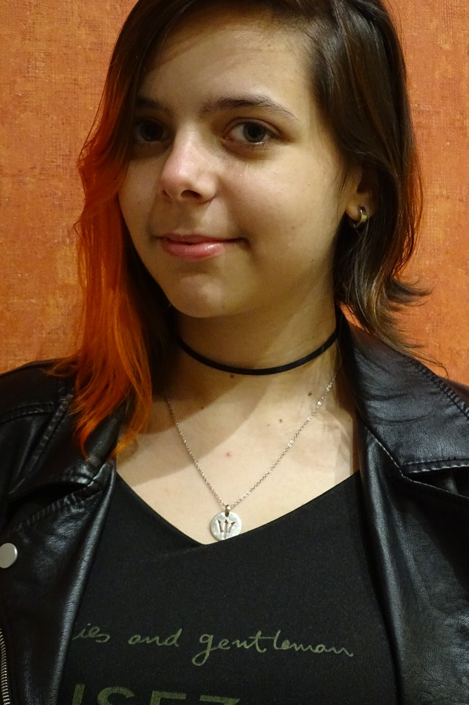
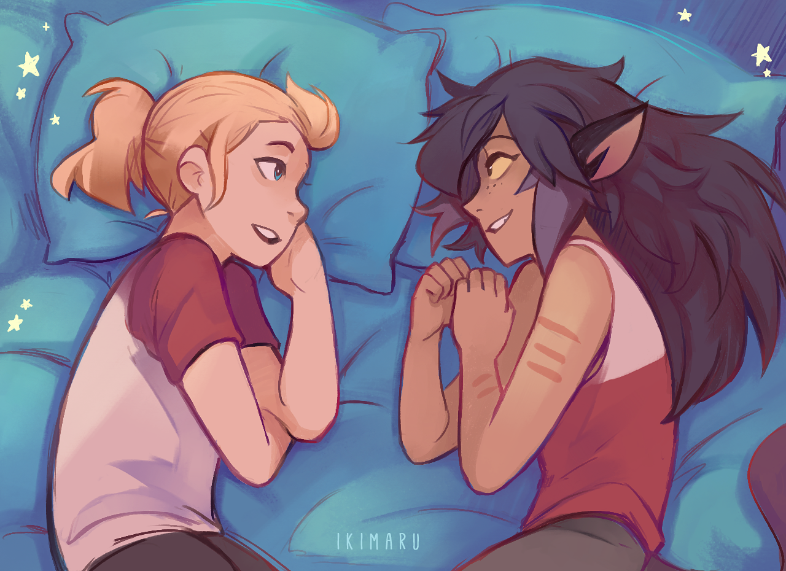
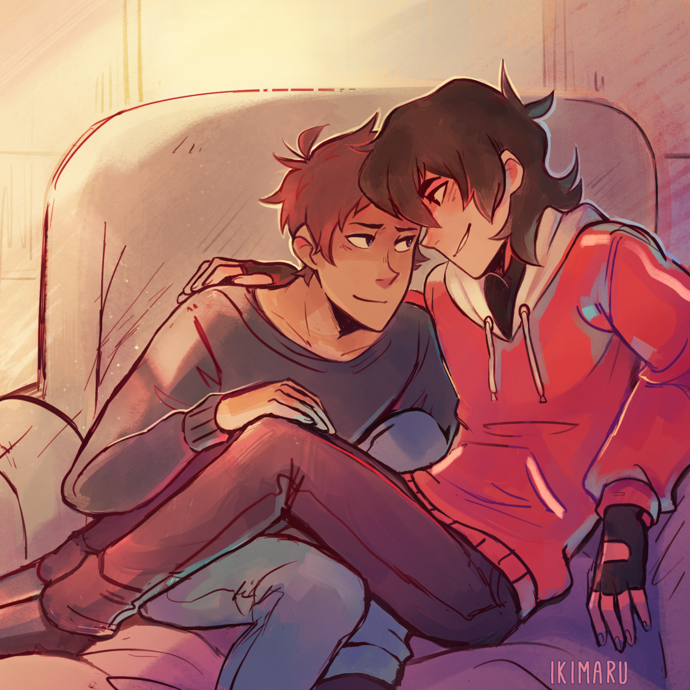
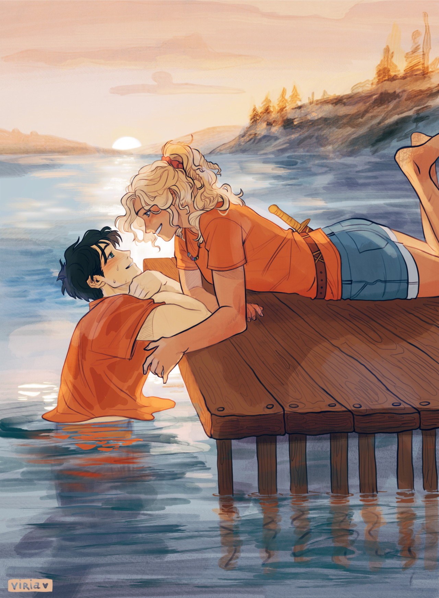
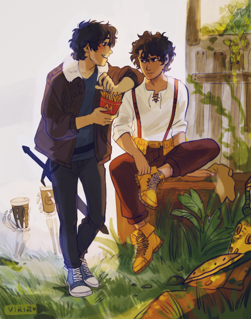

Información personal
- Nombre: Tatiana Kumert
- Universidad Nacional de las Artes: Artes Multimediales
- Materia: Informática General
- Turno: Mañana
- Cátedra: Valeria Drelichman, Pedro Paleo, Leonardo Nadel, Norma Morales
- Año: 2018
- Link a Tumblr
- Esta es una página creada como trabajo práctico para la facultad, no tiene fines comerciales.
Puedes dejar un comentario si gustas
Lista de artistas:
- Kalouriis
- Marurenai
- Cinderile
- A-curious-squirrel
- Amezure
- Imtoobiforyou
- Ct-draws
- Flynns draws
- Ikimaru
- Tumblr: @ikimaru
- Piezas utilizadas:


- T-Stray
- Frozenpinetree
- Noquelle
- Erstwhilesky
- Vetur02
- Viria
- Tumblr: @viria
- Piezas utilizadas:

